Overview
===========
This lab demonstrates the use of TI mmWave sensors to detect people and animals in pre-defined zones of coverage.
Using TI 60GHz AWR6843, and 77GHz AWR1843 and AWR1642 mmWave devices, algorithms run onboard the single-chip device to create an Range-Azimuth heatmap, then extract
features and detections from the heatmap. Chirp configurations are selected to detect slight movements (like
breathing) with a high degree of accuracy. Two use cases are supported - Vehicle Occupancy Detection (VOD) and Child Presence Detection (CPD).
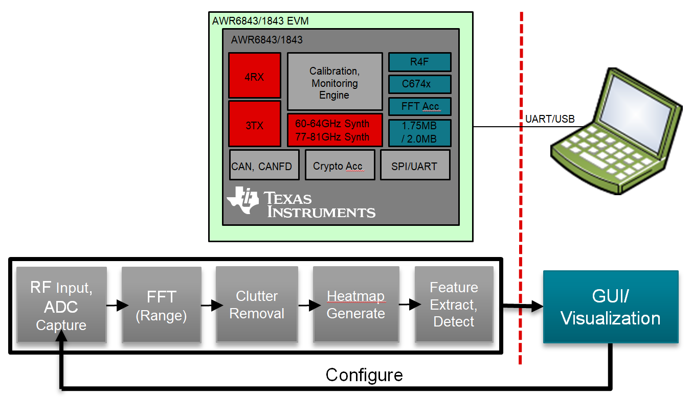
This version features several recent updates:
* The demo now runs in one of three modes: Operational, Zone Tuning, Data Collection.
* The GUI supports different displays for each mode, and multiple operational displays.
* The demo supports the concept of secondary zones, which are used to help primary zone decisions.
* An Arc Removal algorithm, with automatic noise-floor command generation.
* An improved 32-bit clutter removal algorithm that will not overflow with strong targets.
* A new "max 5x5" method of determining zone power.
* Occupant position is now output in the decision vector.
* A configurable heatmap "smoothing" function.
Quickstart
===========
The quickstart contains:
* Precompiled binaries for flashing the device using Uniflash
* Visualizer as .exe
1. Hardware and Software Requirements
-----------
### Hardware
Item | Details
--------------------------|-----------------
Device | [AWR6843 EVM](http://www.ti.com/tool/AWR6843ISK), [AWR1843 EVM](http://www.ti.com/tool/AWR1843BOOST) or [AWR1642 EVM](http://www.ti.com/tool/AWR1642BOOST)
Mounting Hardware | The EVM needs to be mounted at a height of ~1.5-2.5m with a downtilt. An [adjustable clamp style smartphone adapter mount for tripods](https://www.amazon.com/Vastar-Universal-Smartphone-Horizontal-Adjustable/dp/B01L3B5PBI/) and a [60-75" tripod](https://www.amazon.com/Neewer-Portable-centimeters-Camcorder-kilograms/dp/B01N6JCW8F/) can be used to clamp and elevate the EVM. This is only an example solution for mounting; other methods can be used so far as setup specifications are met. For car testing, the EVM needs to be mounted on the car's interior roof. More below.
Computer | PC with Windows 7 or 10. If a laptop is used, please use the 'High Performance' power plan in Windows. 2.4Ghz processor minimum, 8GB RAM recommended.
Micro USB Cable | Due to mounting positions in the vehicle, an 8-20ft cable or USB extension cable is recommended.
Power Supply | 5V, 3A with 2.1-mm barrel jack (center positive). The power supply can be wall adapter style or a battery pack with a USB to barrel jack cable.
Tape Measure |
### Software
Tool | Version | Required For |Details
----------------------------|---------------------------|---------------|--
mmWave Automotive Toolbox | 2.9.x+ | ESx.0 silicon | Contains all files (quickstart, visualizer and firmware source files) related to mmWave Occupancy Detection Lab
MATLAB Runtime | 2017a (9.2) | GUI Visualizer | To run the quickstart visualizer the [runtime](https://www.mathworks.com/products/compiler/matlab-runtime.html) is sufficient.
TI mmWave SDK | 3.4.0.2+ | Firmware Source Code | The latest [TI mmWave SDK](http://dev.ti.com/tirex/#/?link=Software%2FmmWave%20SDK) and all the related tools are required to be installed as specified in the mmWave SDK release notes
TI Emulators package | 6.0.0576.0 or later | - | Upgrade to the latest using CCS update process (see SDK user guide for more details)
VOD Design Document | n/a | More Details /Info | Find it here: http://www.ti.com/lit/ug/tidue95/tidue95.pdf
2. Physical Setup
-----------
For best results, the EVM should be positioned as shown here for Occupancy Detection or Child Presence Detection (CPD),
along with a chirp configuration matching the desired use case. For the front mount case, down tilt of the sensor is about 10 degrees. For the central roof mount
case, you want to avoid having the antenna parallel with the floor, which will cause unnecessary reflections. A 10-15 angle towards the rear of the vehicle is preferred.
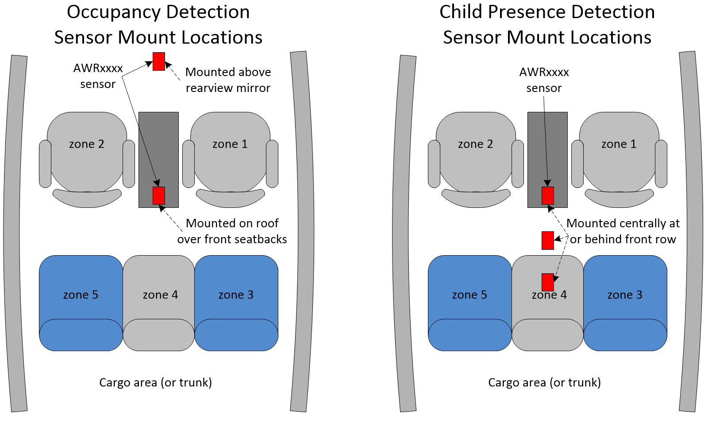
**Benefits of mounting location:**
**Front (rearview mirror) Mount:**
Pro:
* Excellent coverage of front row.
* Excellent coverage of vehicle exterior (intruder detection).
Con:
* Spacing of second row seats are somewhat compressed towards the center (this is antenna dependent) making seat separation a little more difficult.
* Second row footwell view is blocked by front row seats.
**Central Roof Mount:**
Pro:
* Addresses all CPD use cases.
* Excellent coverage of second row footwell (depending on mounting angle).
* Excellent coverage of second row.
* Can see most movement in cargo area (behind second row), depends on seat construction and/or line of sight.
* Typically can choose between:
* front row, footwell and second row, or
* footwell, second row and cargo area.
Con:
* Range/angle to each seat and footwell varies more than in front mount due to the almost parallel mounting angle.
The following configurations are provided to assist with VOD and CPD use cases. Please use the files with matching device names.
Chirp Configuration | Usage Case | Display Zones | Display | Description
---------------------------|------------|---------------|---------|--------------------------------------
od_demo_16xx_4zone.cfg | VOD | 4 | Heatmap | 4 primary + 2 secondary zones.
od_demo_16xx_8zone.cfg | VOD | 5 | VOD, Heatmap | 6 primary + 2 secondary zones.
od_demo_18xx_4zone.cfg | VOD | 4 | Heatmap | 4 primary + 2 secondary zones.
od_demo_18xx_8zone.cfg | VOD | 5 | VOD, Heatmap | 6 primary + 2 secondary zones.
od_demo_18xx_cpd.cfg | CPD | 1 | CPD, Heatmap | 2 primary + no secondary zones.
od_demo_68xx_4zone.cfg | VOD | 4 | Heatmap | 4 primary + 2 secondary zones.
od_demo_68xx_8zone.cfg | VOD | 5 | VOD, Heatmap | 6 primary + 2 secondary zones.
od_demo_68xx_cpd.cfg | CPD | 1 | CPD, Heatmap | 2 primary + no secondary zones.
It is STRONGLY recommended that you follow the procedures at the end of this document for adjusting zone positions,
collecting data and running the training tools to generate new coefficients. This should be done before any serious testing
is performed. Also, there is a new training guide in docs/VOD_coeff_training_steps.pdf that gives step by step instructions.
3. Flash the Device
-----------
* Power on the EVM using a 5V/3A power supply.
* Flash the following image using **Uniflash**
Image | Location
--------------------------|------------
Meta Image 1/RadarSS | `C:<install_dir>\lab0003_occupancy_detection\prebuilt_binaries\oddemo_xxxx.bin`
[[+d Expand for help using Uniflash
* Connect the EVM to your PC and check the COM ports in **Windows Device Manager**
* The EVM exports two virtual COM ports as shown below:
* XDS110 Class Application/User UART (COM UART): Used for passing configuration data to the EVM
* XDS110 Class Auxiliary Data Port (COM AUX): Used to send processed radar data output to the PC
<img src="resource/com_port.png" width="300"/>
{{b Note the COM UART and COM AUX port numbers, as they will be used later for flashing and running the lab.}}
* Put the EVM in flashing mode by connecting jumpers on **SOP0** and **SOP2** as shown in the image for your board.
Then power cycle the EVM.
{{y AWR1642 SOP Jumper locations <p><img src="resource/flash_jumpers.png" width="300"/></p> }}
{{y AWR1843 SOP Switch locations <p>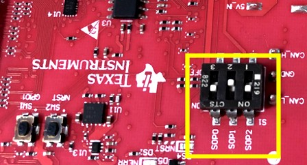</p> }}
{{y AWR6843ISK Standalone SOP Jumper locations <p>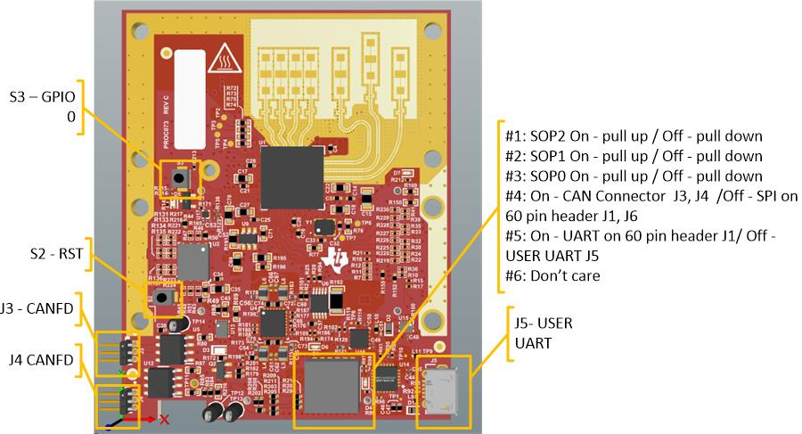</p>
The switches should be set such that both **SOP0** and **SOP2** are ON and **SOP1** is OFF. (Similar to AWR1843 EVM above)
}}
{{y xWR6843 + mmWaveICBOOST SOP Jumper locations <p>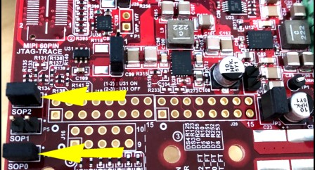</p>
<p>In this case, the jumpers are actually on the Carrier Card.</p>}}
* Open the **UniFlash tool** ([Download offline tool](http://www.ti.com/tool/UNIFLASH) or use [cloud version](https://dev.ti.com/uniflash/#!/) )
* In the New Configuration section, locate and select the appropriate device (AWR1843)
* Click Start to proceed
* Click the **Settings & Utilities** tab. Under setup, fill the **COM Port** text box with the Application/User UART COM port number (COM UART) noted earlier.
* In the **Program** tab, browse and locate the images (.bin file) as specified in the lab directions.
<img src="resource/uniflash.png" width="600"//>
* **Power cycle** the device and click on **Load Images**
[[g! Successful Flash Procedure
UniFlash’s console should indicate: [SUCCESS] Program Load completed successfully
]]
* Power off the board and remove only the **SOP2 jumper**, or in the case of AWR1843, set **SOP2 switch to Off**.
[[y SOP2 Removed/Switched Off?
Ensure that the jumper has been removed (or switch flipped) and the EVM power cycled. This puts the board back in functional mode.
]]
+]]
4. Choose Visualizer Setup Settings
-----------
Before running the demo either in Matlab or from DOS, you will need to know the COM port numbers for the EVM's User and Data UART ports.
This is discussed in the pulldown section above titled "Expand for help using Uniflash".
Once found, the COM port numbers will usually not change from run to run or boot to boot.
These are the command line arguments for the Occupancy Detection demo gui:
Argument | Example/Purpose
------------------------|------------
Program Name | od_demo (it will either be a .exe (for DOS) or .m (for Matlab))
COM port (Data) | 6
COM port (User) | 5
Chirp Configuration | `C:<install_dir>\lab0003_occupancy_detection\chirp_configs\od_demo_1843_4zone.cfg`
Operational Display Type | 0 (0 = Zone Occupancy (VOD), 1 = Child Presence Detection (CPD), 2 = Heatmap)
| Note 1: Zone Occupancy must be run with an 8 zone config, with a front mounted sensor.
| Note 2: Child Presence Detection must be run with a CPD config, with an overhead mounted sensor.
Heatmap Display Type | 1 (1 = Polar, 0 = Rectangular)
Flip Display in Azimuth | 0 (0 = no flip, 1 = flip)
5. Run the Lab Visualizer (DOS prompt)
-----------
The following steps assume the AWR6843 EVM is flashed with the Occupancy Detection firmware.
* Mount the EVM as described above in the Test Setups.
* Attach the micro USB cable from the EVM to the host PC.
* Attach the 5V power adapter cable to the EVM.
* Open a DOS Command Window, and cd to `C:<install_dir>\lab0003_occupancy_detection\gui`.
* At the DOS prompt, enter a command like one of these (refer to the above arguments):
* [VOD, cartoon] od_demo.exe 6 5 `C:<install_dir>\lab0003_occupancy_detection\chirp_configs\od_demo_18xx_8zone.cfg 0 0 0
* [CPD, cartoon] od_demo.exe 6 5 `C:<install_dir>\lab0003_occupancy_detection\chirp_configs\od_demo_18xx_cpd.cfg 1 0 1
* [any, heatmap] od_demo.exe 6 5 `C:<install_dir>\lab0003_occupancy_detection\chirp_configs\od_demo_18xx_4zone.cfg 2 1 0
After a successful start, the visualizer will begin to display occupancy at a frame rate, as shown
in the next section. Again, what is displayed depends on the "demo mode" parameter of oddemoParms (found in the
chirp configuration file), and the Operational Display Type on the command line, when the "demo mode" is "Operational".
To terminate the demo, perform the following steps:
* Click inside the GUI display to get focus.
* Press lowercase q.
* Click the "Exit" icon (X) in the top right of the Visualization window.
6. Understanding the Output
-----------
There are three operational displays, one of which will be displayed when the **oddemoParms** "mode" field is 1 (one).
The display type is selected in the command line argument "Operational Display Type" described above (see Visualizer Setup Settings).
{{b NOTE: Operational mode is selected via the first parameter of oddemoParms:
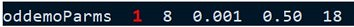
}}
Zone Occupancy (VOD) Display
---------------
This display is selected when the command line argument "Operational Display Type" described above is set to zero.
It will display five individual primary zones (2 front, 3 back) in a cartoon image of a vehicle. It requires use of an eight zone
configuration (see the chirp_configs folder) and a front mounted sensor for proper use.
Two narrow zones are overlapped to form the back center zone,
and two zones are used as secondary zones for front to back row descrimination. If you modify the 8 zone configuration,
please run it first with the heatmap display first to verify hotspot positioning, and then switch to this display once it is working.
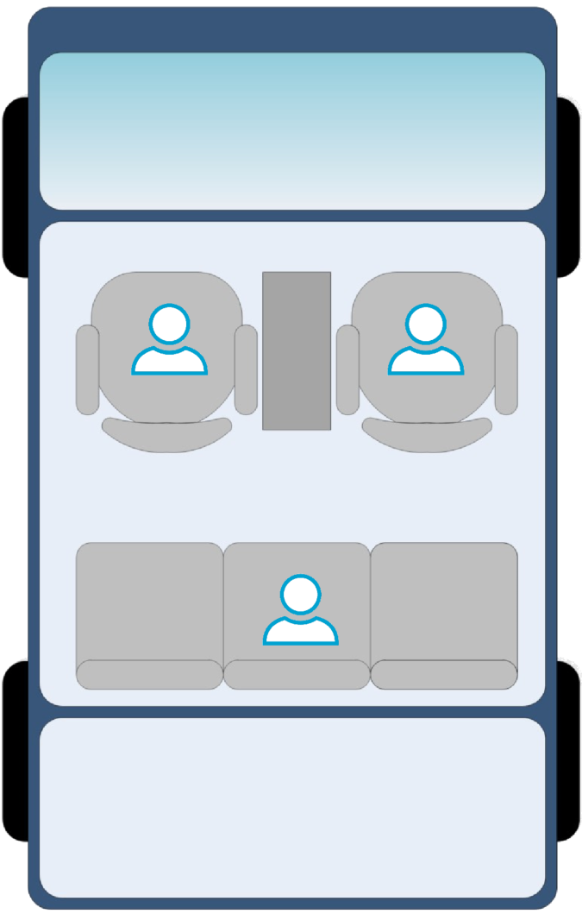
Child Presence (CPD) Display
---------------
This display is selected when the command line argument "Operational Display Type" described above is set to 1 (one). It requires use of
a two zone configuration (see the chirp_configs folder) and an overhead mounted sensor for proper use. This CPD display takes advantage of
the new zone power localization* that allows the occupant position to be output. Of the two zones that are defined, the first zone encompasses
the entire back row plus footwell area, and a second non-used zone is set behind it. When a detection is indicated in the back row area, the
position is used to place a cartoon image of a child in the nearest of six pre-defined positions.
*The new "max 5x5" zone power determination searches each zone for the highest power 5x5 in the zone. The average power of the 5x5 is used for
feature detection and the center of the 5x5 is output as the occupant's position.
Note: This display will need tweaking in nearly every installation due to differences in interior geometries and sensor mounting position and angle.
This will likely include changes to the zone position and size as well as the Matlab display function displayCarCPD().
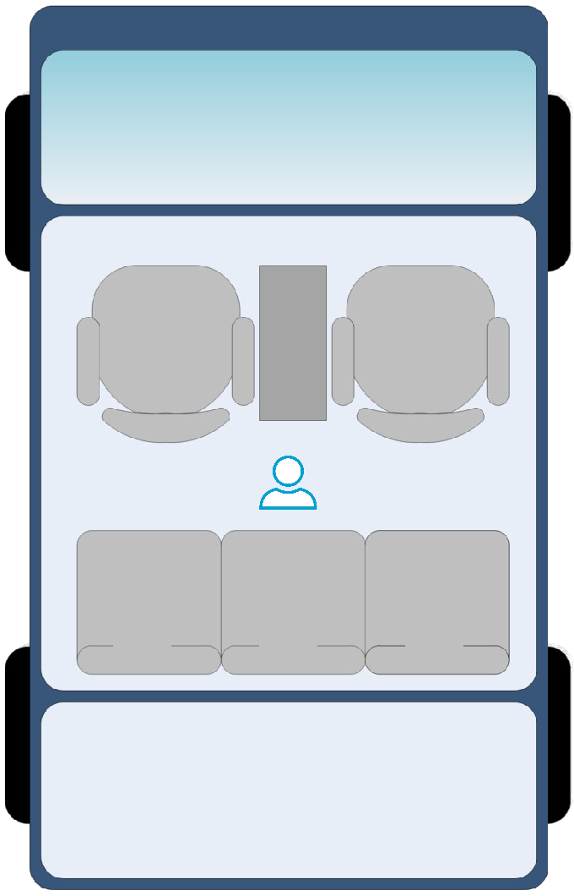
Heatmap Display
---------------
This display is selected when the command line argument "Operational Display Type" described above is set to 2.
The heatmap display is automatically scaled to the range of values within the heatmap for each frame. Blues are smaller values and Yellows are large.
A bright spot indicates a higher energy return that has not been removed by the clutter removal algorithm. At times when
there is no person in the zone a "bright spot" can actually be relatively small values because of the automatic scaling. When a person enters the scene, the scaling
will adjust and the person will be shown as a bright spot with everything else fading to smaller value colors.
With the heatmap display, a zone boundary will turn red when the zone is occupied, and gray when not occupied. This
display will use secondary zones if defined, which means if the primary zone is above threshold but the secondary zone
is not, the zone boundary will not turn red.
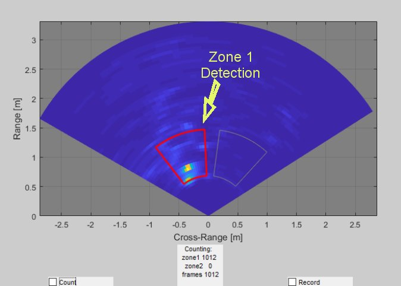
Two widgets are provided in the heatmap display to aid in using the output:
* The Record checkbox starts recording the heatmaps to a file, up to 192 frames. You must uncheck the checkbox for the file to be saved.
The file(s) will be saved where the gui is run, and will be named log_xxx.mat, starting with log_001.dat, incrementing in number.
* The Count checkbox starts a running frame counter, and with it, the count of positive detections in each zone.
Unchecking the checkbox stops the counters. Checking it again will restart them from zero.
{{y IMPORTANT NOTE: The Record checkbox is now only enabled in Data Collection Mode! The demo's mode is selectable
via the oddemoParms command described below.}}
{{r NOTE on Primary and Secondary zones: By default, a zone is a primary zone. A primary zone is displayed in the
GUI displays. A secondary zone is used to aid in the decision making for a primary zone and is not displayed in the
operational displays. A zone is identified as a secondary zone with the **secZoneDef** command described below.
These commands are not sent to the device, and are only used in the GUI. When a secondary zone is associated with
a primary zone via the **secZoneDef** command, the primary zone decision will not be positive unless both
primary and secondary zones are above the averaging threshold.}}
Developer's Guide
===========
Building the Firmware from Source Code
-----------
### 1. Prerequisites for Firmware
{{y The [software prerequisites](#software) must be met before continuing!}}
To verify proper installations, navigate to **`C:\ti`** and ensure that the following tools have been installed in the *EXACT* directory specified.
Tool | Version | Folder Path | Download link & Details
----------------|-------------|----------------------------------|----------------
CCS | 8.0 or later| `C:\ti\ccsv8` | [Download link](http://processors.wiki.ti.com/index.php/Download_CCS#Code_Composer_Studio_Version_8_Downloads) Note: CCSv6.x cannot be used
TI SYS/BIOS | 6.73.1.01 | `C:\ti\bios_6_73_01_01` | Included in mmwave sdk installer
TI ARM compiler | 16.9.6.LTS | `C:\ti\ti-cgt-arm_16.9.6.LTS` | Included in mmwave sdk installer
TI DSP compiler | 8.3.3 | `C:\ti\ti-cgt-c6000_8.3.3` | Version 8.1.3 must be downloaded and installed. [Download link](http://software-dl.ti.com/dsps/forms/self_cert_export.html?prod_no=ti_cgt_c6000_8.1.3_windows_installer.exe&ref_url=http://software-dl.ti.com/codegen/esd/cgt_registered_sw/C6000/8.1.3PC)
XDC | 3.50.8.24 | `C:\ti\xdctools_3_50_08_24_core` | Included in mmwave sdk installer
C64x+ DSPLIB | 3.4.0.0 | `C:\ti\dsplib_c64Px_3_4_0_0` | Included in mmwave sdk installer
C674x DSPLIB | 3.4.0.0 | `C:\ti\dsplib_c674x_3_4_0_0` | Included in mmwave sdk installer
C674x MATHLIB | 3.1.2.1 | `C:\ti\mathlib_c674x_3_1_2_1` | Included in mmwave sdk installer
mmwave device support packages | 1.5.3 or later | - | Upgrade to the latest using CCS update process (see SDK user guide for more details)
TI Emulators package | 6.0.0576.0 or later | - | Upgrade to the latest using CCS update process (see SDK user guide for more details)
### 2. Import Lab Project
The demo source now provides MSS and DSS projectspec files for each of these devices:
AWR1642BOOST, AWR1843BOOST and IWR6843ISK. The resulting CCS project names will be as follows:
CCS Projectspec | Imported CCS Project Name
------------------|-----------------------------
oddemo_16xx_dss.projectspec | oddemo_16xx_dss
oddemo_16xx_mss.projectspec | oddemo_16xx_mss
oddemo_18xx_dss.projectspec | oddemo_18xx_dss
oddemo_18xx_mss.projectspec | oddemo_18xx_mss
oddemo_68xx_dss.projectspec | oddemo_68xx_dss
oddemo_68xx_mss.projectspec | oddemo_68xx_mss
You only need to import the MSS and DSS projects for your device. The DSS is for the C674x DSP core and the MSS project for the R4F core.
These need to be imported to CCS and compiled to generate firmware for the mmWave sensor.
* Start CCS and set the workspace as desired.
* Import the MSS and DSS projects below to CCS using either TI Resource Explorer in CCS or CCS Import Projectspecs method:
* (choose the versions matching your device, eg, 16xx, 18xx or 68xx)
* **oddemo_68xx_dss**
* **oddemo_68xx_mss**
[[+d Expand for details on importing via TI Resource Explorer in CCS
* In the top toolbar, navigate to **View > Resource Explorer**
* In the **Resource Explorer** side panel (not the main panel with "Welcome to.."), navigate to **Software > mmWave Sensors > Automotive Toolbox - <ver> > Labs > Occupancy Detection Demo**
* Under the expanded **Occupancy Detection Demo** folder, there should be two CCS projects, **CCS Project - DSS** and **CCS Project - MSS**.
* For each of the two projects: Click on the project, which should open the project in the right main panel, and then click on the Import to IDE button <img src="resource/import_ide_icon.png" width="40"/>.
+]]
[[+d Expand for details on importing via CCS Import Projectspecs
* In the top toolbar, navigate to **Project > Import CCS Projects...**
* With the **Select search-directory** option enabled, click **Browse...**, navigate to the **lab0003_occupancy_detection** folder at `C:\ti\<mmwave_automotive_toolbox_install_dir>\labs\lab0003_occupancy_detection`, and then click **OK**.
* Under **Discovered projects**, select **oddemo_xxxx_dss** and **oddemo_xxxx_mss**, then click **Finish**.
+]]
[[g! Successful Import to IDE
After using either method, both project should be visible in **CCS Project Explorer** (Note, the actual project names will
depend on the projects imported. 16xx projects are shown here)
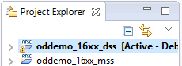
]]
[[b! Project Workspace
When importing projects to a workspace, a copy is created in the workspace. All modifications will only be implemented for the workspace copy. The original project downloaded in mmWave Automotive Toolbox is not touched.
]]
### 3. Build the Lab
#### **Build DSS Project**
The DSS project must be built before the MSS project,
because the MSS project will add the DSS' .bin file into the binary that will be flashed to the device.
{{y The DSS project must be built using compiler version 8.3.3.
To check the build settings, select **oddemo_18xx_dss** and right click on the project to select **Show build settings...**.
Under the **General** tab, the **Advanced Settings** section has a drop down menu for **Compiler Version**.
Ensure that it reads **TI v8.3.3**.}}
With the **oddemo_18xx_dss** project selected in **Project Explorer**, right click on the project and select **Rebuild Project**. Selecting **Rebuild** instead of **Build** ensures that the project is always re-compiled. This is especially important in case the previous build failed with errors.
[[g! Successful DSS Project Build
In the **Project Explorer** panel, navigate to and expand **oddemo_18xx_dss > Debug** directory. The project has been successfully built if the following files appear in the **Debug** folder:
* oddemo_18xx_dss.bin
* oddemo_18xx_dss.xe674
]]
#### **Build MSS Project**
After the DSS project is successfully built, select **oddemo_18xx_mss** in **Project Explorer**, right click on the project and select **Rebuild Project**.
[[g! Successful MSS Project Build
In the **Project Explorer** panel, navigate to and expand **oddemo_18xx_mss > Debug** directory. The project has been successfully built if the following files appear in the **Debug** folder:
* oddemo_18xx_mss.bin
* oddemo_18xx_mss.xer4f
* oddemo_18xx.bin
]]
[[r! Build Fails with Errors
If the build fails with errors, please ensure that all the [prerequisites](#software) are installed as mentioned in the mmWave SDK release notes.
]]
### 4. Execute the Lab
There are two ways to execute the compiled code on the EVM:
* Deployment mode: the EVM boots autonomously from flash and starts running the bin image
* Using Uniflash, flash the **oddemo_18xx.bin** found at `<PROJECT_WORKSPACE_DIR>\oddemo_18xx_mss\Debug\oddemo_18xx.bin`
* The same procedure for flashing can be use as detailed in the Quickstart [Flash the Device](#1-flash-the-device) section.
* Debug mode: enables connection with CCS while lab is running; useful during development and debugging
[[+d Expand for help with Debug mode:
The CCS debug firmware (provided with the mmWave SDK) needs to be flashed once on the EVM.
* CCS Debug method is enabled by flashing the CCS Debug Firmware (provided with the mmWave SDK) using the methods covered in the Quickstart [Flash the Device](#1-flash-the-device) section.
* Use the following image instead
Image | Location | Comment
--------------------------|----------------------------|------------------------
Meta Image 1/RadarSS | `C:\ti\mmwave_sdk_<ver>\packages\ti\utils\ccsdebug\xwr18xx_ccsdebug.bin` | Provided with the mmWave SDK
After the CCS debug firmware has been flashed, connect the EVM to CCS
* Create a target configuration (skip to "Open the target..." if config already created previously in another lab for xwr18xx)
* Go to **File > New > New Target Configuration File**
* Specify an appropriate file name (ex: AWR18xx.ccxml) and check "**Use shared location**". Click **Finish**.
* In the configuration editor window:
* Select **Texas Instruments XDS110 USB Debug Probe** for Connection
* Select **AWR1843** device as appropriate in the Board or Device text box.
* Press the **Save** button to save the target configuration.
* [Optional]: Press the **Test Connection** button to check the connection with the board.
* Open the target configuration window by going to **View > Target Configurations**.
* Under **User Defined** configurations the target configuration previously created should appear.
* Right click on the target configuration and select **Launch Select Configuration**. The target configuration will launch in the **Debug Window**.
<img src="resource/target_config.png" width="350"/>
* Group cores and connect
* Select both the **Texas Instruments XDS110 USB Debug probe/C674X_0** and **Texas Instruments XDS110 USB Debug probe/Cortex_R4_0** and then right click and select **Group core(s)**
<img src="resource/ccsdebug_groupcores.png" width="350"/>
* Select **Group 1** and then right click and select **Connect Target**
<img src="resource/connect_target_2.png" width="350"/>
* Load the binary
* Once both targets are connected, click on the C674X_0 target and then click **Load** button in the toolbar.
<img src="resource/load_program.png" width="500"/>
* In the **Load Program** dialog, press the **Browse Project** button .
* Select **oddemo_18xx_dss.xe674** found at `<PROJECT_WORKSPACE_DIR>\oddemo_18xx_dss\Debug\oddemo_18xx_dss.xe674` and press **Ok**.
* Press **Ok** again in the **Load Program** dialog.
* Repeat the above Load the Binary process for the Cortex_R4_0 target, selecting instead **oddemo_18xx_mss.xer4f** found at `<PROJECT_WORKSPACE_DIR>\oddemo_18xx_mss\Debug\oddemo_18xx_mss.xer4f`
<img src="resource/load_program2.png" width="500"/>
* Run the binary
* Select **Group 1**, press the **Run/Resume** button <img src="resource/run_resume_icon.png" width="30"/>
* The program should start executing and generate console output as shown.
<img src="resource/ccsdebug_console.png" width="400"/>
[[g! Successful Run Binary
If binary is running correctly, the Console will include the “CLI is operational” message which indicates that the program is ready and waiting for the sensor configuration.
]]
+]]
After starting the lab on the AWR1843 using either method, the program will wait until a chirp configuration is sent to it via the "User" COM port.
Visualizer Source Files
-----------
{{y Working with and running the Visualizer source files requires a MATLAB License not just the MATLAB Runtime Engine}}
The detection processing chain are implemented both in the firmware and in Matlab, and can be selected independently by configurations in the chirp config and the gui arguments.
The visualizer serves to read the UART stream from the device and plots the heatmap along with zone decisions.
Source files are located at `C:<install dir>\lab0003_occupancy_detection\gui`.
* **od_demo.m**: the Matlab gui program which reads and parses the UART data for visualization.
* **od_demo.exe**: the DOS executable version of the gui program.
Chirp Configuration files are located at `C:<install dir>\lab0003_occupancy_detection\chirp_configs`.
In addition to the normal mmWave chirp configuration CLI commands, there are several commands that are specific to the
Occupancy Detection Demo:
Command | Parameters
------------------|------------
guiMonitor | (this command has unique arguments for this demo)
| 1 = send **Feature Vector** as a TLV to the UART (TLV is defined below)
| 1 = send **Decision Vector** as a TLV to the UART. Note: Turning this off stops the display of zone boundaries.
| 16, 32 = send the **Heatmap** as 16-bit integer or 32-bit float respectively. 0 = don't send. The GUI automatically adjusts to each format.
| NOTE: Heatmap size MUST be 32 for Data Collection Mode, and is best 16 for Operational and Zone Tuning modes.
zoneDef | 2, 4 or 6 = number of zones, followed by the following four values for each zone. Note that you are defining 1, 2 or 3 pairs of zones.
| range start, specified as the row index into the heatmap
| range length, specified as the number of rows in the heatmap
| azimuth start, specified as the column index in the heatmap
| azimuth length, specified as the number of columns in the heatmap
| NOTE: secondary zones must be listed last, following primary zones
secZoneDef | (defines a zone as being secondary (a zone is primary by default))
| 1-based secondary zone number
| number of primary zone numbers to follow
| list of primary zone numbers affected by this secondary zone
coeffMatrixRow | zone pair number (0 through 2)
| matrix row number (0 through 3)
| coefficients for the row (currently 6 values)
meanVector | zone pair number (0 through 2)
| 5 values (mean vector used to calculate the feature extract vector)
stdVector | zone pair number (0 through 2)
| 5 values (standard deviation vector used to calculate the feature extract vector)
rowNoise* | Generated row noise-floor values for a set of contiguous rows
| first row number (zero based)
| number of rows (number of values to follow)
| noise-floor values
oddemoParms | demo mode: 1=Operational, 2=Zone Tuning, 3=Data Collection
| window length (windowLen = number of frames). This window is used by the target to generate frame rate feature vector and decisions. Must be a multiple of 4.
| gamma value: diagonally-loading parameter in MVDR. When the covariance estimate is singular or near-singular, adding a small value along the diagonal avoids numeric stability issues (see VOD Design Doc referenced above).
| threshold value: A percent given as a decimal (eg. 0.50 = 50%). This is the threshold of positive frame rate detections to declare occupied. See the next parameter: "frame rate detection window".
| frame rate detection window: The number of frame detections averaged together to produce the "percent" value in the Detection TLV. This can be any size. Smaller numbers give faster response, larger numbers give more accurate results.
| heatmap smoothing: Smoothing factor to be applied to each cell of the heatmap compared to the previous frame's heatmap. If the current cell is less than prev_cell = previous cell times a factor, it is set to prev_cell. Eg, if factor = 0.75, then each cell in the current heatmap is set to the previous frame's cell x 0.75 only if less than that. Creates a smooth power fade. 0.0 disables the feature.
{{y **Important Notes on Arc Removal and rowNoise* generation:**
A side effect of MVDR is that an "arc" can be generated with some strong moving
targets. This arc is extra energy in all azimuth cells along the affected range row
of the heatmap. To combat this, the target code now sports an Arc Removal algorithm.
This algorithm depends on knowing what the normal noise-floor value is for each row.
The noise-floor is the average energy in the row when no moving targets are present.
The code will automatically generate these noise-floor values for your environment.
This is how it works:
1) If rowNoise commands are not read from the config file, the code assumes that
they need to be generated. In this case, the GUI will display this static screen for about
10 seconds:
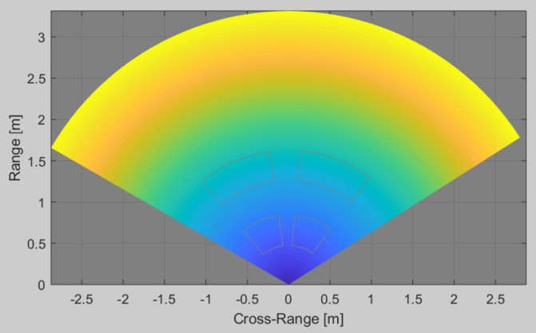
Also, the command window will display the following message:
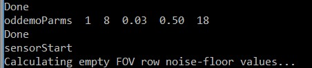
When you see these, the code is calculating noise-floor values and will dump the
commands to the command window that you can copy paste into your chirp config file,
before the sensorStart command.
**IT IS CRITICAL** that during this time there are **NO** moving objects, people,
etc. in the field of view or even nearby.
2) If rowNoise commands are read from the config file, the code will load these values
and start normally.
**Other notes:**
1) Extremely bright (large RCS) targets can cause the 1D FFT to overflow, resulting
in an arc that cannot be removed. Targets with this level of RCS will not be found
inside a vehicle (an example would be a large corner reflector at close range).
These arcs appear as a solid yellow line across the heatmap row.
2) noise-floor values will vary slightly from environment to environment, and so
should be re-generated as needed. To do this, simply comment out any existing rowNoise
commands and restart the demo.
3) If you change Tx Backoff or RxGain values in your profileConfig command, you will
need to let the demo regenerate new noise-floor values for you.
}}
Data Packet Format
-----------
A TLV(type-length-value) encoding scheme is used with little endian byte order.
For every frame, a packet is sent consisting of a fixed sized **Frame Header** and then a variable
number of TLVs depending on what was selected via the guiMonitor command.
There are 3 possible TLV types for the Occupancy Detection demo:
TLV Name | Type | Data Size (bytes)
------------------------|------|------------
Azimuth Range Heatmap | 8 | 48 x 64 x 2 or 4 (size of short int or float)
Feature Vector | 9 | 5 x 4 (size of float)
Decision Vector | 10 | 4
<img src="resource/packet_structure.png" width="600"/>
### Frame Header
Size: 32 bytes
```Matlab
frameHeaderStructType = struct(...
'sync', {'uint16', 8}, ... % syncPattern in hex is: '02 01 04 03 06 05 08 07'
'totalPacketLen', {'uint32', 4}, ... % In bytes, including header and 32 byte padding
'platform', {'uint32', 4}, ... % 0xA1642 or 0xA1843
'frameNumber', {'uint32', 4}, ... % Starting from 1
'timeCpuCycles', {'uint32', 4}, ... % Time in DSP cycles when the message was created
'numDetectedObj', {'uint32', 4}, ... % not used in VOD
'numTLVs' , {'uint32', 4}, ... % Number of TLVs in this message
```**Frame header in MATLAB syntax**
### TLVs
The TLVs can be of type **RANGE_AZIMUT_HEAT_MAP**, **FEATURE_VECTOR**, or **DECISION**.
Each TLV consists of a TLV header plus a unique data type.
#### **TLV Header**
Size: 8 bytes
```Matlab
% TLV Type: 08 = Heatmap, 09 = Feature Vector, 10 = Decision Vector
tlvHeaderStruct = struct(...
'type', {'uint32', 4}, ... % TLV object identifier
'length', {'uint32', 4}); % TLV object length, in bytes
```**TLV header in MATLAB syntax**
Following the header, is the TLV-type specific payload
#### **Range Azimuth Heatmap TLV**
Type: RANGE_AZIMUT_HEAT_MAP
Size: 64 x 48 x sizeof (float or short int, depending on guiMonitor parameter)
{{y The Occupancy Detection Range Azimuth Heatmap is a 2D array of floats or short ints, currently defined as 64 range rows with 48 azimuth angles per row. The total range is defined at 3 meters, so the range
resolution of each row is 3m / 64 = 4.69mm. In terms of azimuth, zero degrees is perpendicular to the antennas, with 60 degrees of view on either side.
Negative angles are to the left, with positive angles to the right. With 48 total angles, there are 24 angles per 60 degrees on each side,
or 2.55 degrees per angle. The zone definition command (**zoneDef**) is specified as indexes into the heatmap.}}
<img src="resource/oddemo_heatmap.jpg" width="650"/>
#### **Feature Vector TLV**
Type: FEATURE_VECTOR
Size: 5 x sizeof (float)
All values in the Feature Vector are normalized by the Mean Vector and Standard Deviation Vectors
that are contained in the chirp configuration (.cfg) file.
```java
featureVector = struct(...
'avgPower1', {'float', 4}, ... % Normalized zone 1 Power averaged over windowLen frames
'avgPower2', {'float', 4}, ... % Normalized zone 2 Power averaged over windowLen frames
'powerRatio1', {'float', 4}, ... % Normalized zone 1 Power ratio of current power averages
'powerRatio2', {'float', 4}, ... % Normalized zone 2 Power ratio of current power averages
'crossCorr', {'float', 4}, ... % Normalized Cross correlation value
```**Feature Vector Structure in MATLAB syntax**
#### **Decision Vector TLV**
Type: DECISION
Size: 12 bytes per zone
The Decision Vector is a mix of floats and 16-bit ints; four values per zone:
```java
decisionVector = struct(...
'percent', {'float', 4}, ... % percentage of positive detections during the frame window period
'power', {'float', 4}, ... % windowed average zone power
'rangeIdx', {'uint16', 2}, ... % heatmap range idx for the center of the max 5x5
'azimuthIdx',{'uint16', 2}, ... % heatmap azimuth idx for the center of the max 5x5
```**Decision Vector Structure in MATLAB syntax**
Zone and Coefficent Training
-----------
Zone coefficients are used in the last stage of processing, to take the averaged zone power features
and make an occupied/not-occupied decision for each zone. The coefficients in effect "teach" the
code what the zones look like when occupied vs. empty.
<img src="resource/vod_algos.jpg" width="640"/>
To maximize the performance of these algorithms, the coefficients need to be tuned for each
environment, or scene, in which the demo is used. We provide a tool and the following
instructions to tune the demo parameters. The demo commands that are created by the training process are: (see
the section above titled "Visualizer Source Files" for command parameters).
* zoneDef (this is adjusted manually as described below)
* coeffMatrixRow
* meanVector
* stdVector
{{y Please note! A new resource has been added to the docs/ folder of this lab: VOD_coeff_training_steps.pdf. This
is a step-by-step guide through the process, using the new GUI that the demo provides for training (Data Collection Mode). }}
{{b NOTE: Zone Tuning mode is selected via the first parameter of oddemoParms:
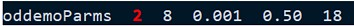
}}
[[+d Expand for details on tuning zone definitions
Zone definition modification is performed as follows:
* Setup the scene as it will actually be used. This includes the positioning of the EVM, and
of the subjects of interest.
* Edit your desired config file and set the first parameter of **oddemoParms** to 2 (Zone Tuning mode).
* Start the demo running. It doesn't matter what the current zone definitions are, or the other
coefficient values - we are only concerned with the heatmap at this point.
* Take a few screen captures and zoom in on them like in the following picture, so that
you can see the individual heatmap cells:
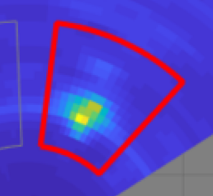
{{y NOTE: In Zone Tuning mode, the heatmap display will show **all** zones, both primary and secondary.
This is to facilitate zone positioning. Also, no secondary logic is used to turn the zones red. This allows
you to see how individual zones are performing. Don't take this too seriously until you have completed
coefficient training described below.
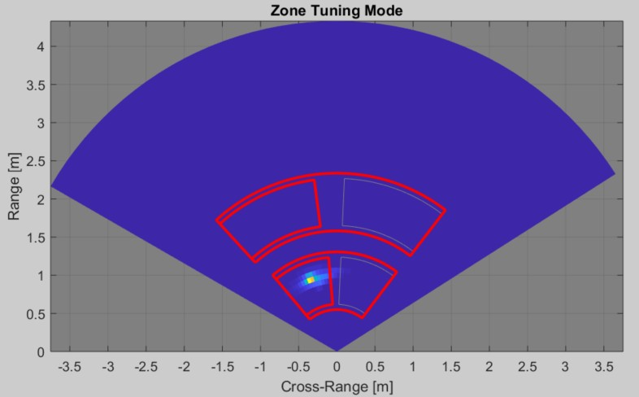
}}
* The goal here is to center the hot spot created by subjects in each zone.
* In the **zoneDef** command, the four values that define the zone area are (in order): Starting row (range) index,
number of rows, starting column (azimuth) index, and number of columns.
* Adjust the column (azimuth) values first, with the goal of centering the hot spot(s)
horizontally, and having at least 2 columns of darker blue between the hot spots and the zone edges.
* Centering the hot spots vertically (in rows) is less important, but you still want to have
a few rows of darker blue between the hot spots and the zone edges.
* Generally, smaller zones with more space between them will decrease the amount of energy transfer between zones, both in
range and azimuth. If the seats are moveable, you may want to define the zones such that the hotspot
will be in the front of the zone when the seat is forward, and in the back of the zone with it pushed all
the way back.
* Restart the demo with your updated **zoneDef** command, and repeat until you are satisfied
with the positioning of the zone edges.
* secZoneDef commands are not used in this mode.
+]]
{{b NOTE: Data Collection mode is selected via the first parameter of oddemoParms:
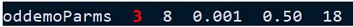
}}
[[+d Expand for details on training coefficients
* If needed, perform zone tuning first, as described above.
* Please refer to VOD_calibration_steps.pdf as there are more details and a step through guide.1
* Edit your desired chirp config file and set the first parameter of **oddemoParms** to 3 (Data Collection mode).
This mode's display will show the internally averaged frame zone power. This is an aid to adjusting how much movement
is happening during data collection. The goal is to set a desired power level and have all participants attempt to
keep the power of their zone at that level. It doesn't hurt if the power level briefly jumps
up or down as it will be averaged out, but if it remains high or low, you should start again. Try to have the same
level per zone. In any case, experiment with subjects to find the amount of power you want to tune for.
{{y Training for power levels that approach the noise-floor accomplishes the following:
* It increases the likelihood of detecting an occupant that is barely breathing.
* It also increases the likelihood of false detections since the occupied level is similar to the unoccupied level.
So, it is a trade-off that will need to be adjusted through experimentation.
}}
The zones are listed in the same order as in the **zoneDef** config command. In this snapshot, there is a
person sitting in the back-left zone:
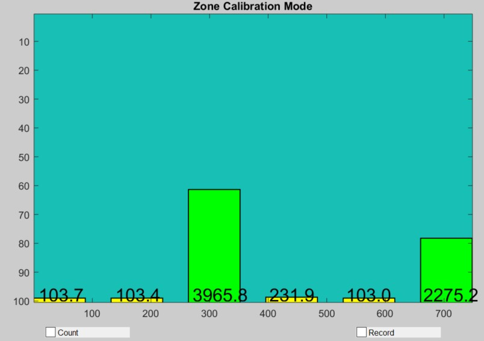
* Collect training data for all possible zone states. Per zone pair, this means running the
demo and using the Record feature four times, once with both zones empty, again with both zones occupied, and again for each zone occupied.
Each time, press the "Record" button on the gui and collect 192 frames (press the Record button again after the counter reaches 192 to save the file).
These filenames will be used to run the coefficient generation tool (or you can rename them if you make your
your own batch files):
Filename | Zone 1 State | Zone 2 State | Meaning
--------------|--------------|--------------|----
log_001.mat | 0 | 0 | both zones empty
log_002.mat | 1 | 0 | first zone occupied
log_003.mat | 0 | 1 | second zone occupied
log_004.mat | 1 | 1 | both zones occupied (now optional, see note)
{{y Note: The tool has been updated to recognize when the "both zones occupied" case is missing (i.e. not provided to the tool). When this happens,
the tool automatically saves the individual zone occupied data and re-uses it for the "both occupied" case. This reduces the number of required
collected data sets, and the number of test subjects required. For completeness, you may still collect this case and provide it to the tool.
}}
* Don't worry about getting left and right mixed up. There is an easy way to fix it if you get it wrong. See the end of these instructions for details.
{{r **Build opt_coeffs.exe**
Due to copyright issues, we cannot provide the source for function fmincg() in opt_coeffs.m.
View the opt_coeffs.m header to find the download location. Once added to opt_coeffs.m, compile opt_coeffs.exe
in Matlab using the following command: (a Matlab license is required)
**mcc -m opt_coeffs.m**
}}
* **opt_coeffs.exe** is the tool for generating the coefficents. This tool requires one file for configuration,
and has the following command line parameters: (please refer to the provided batch files in \tools for
examples of the calling syntax).
Parameter | Type | Purpose
--------------|------|----------------
dataListFile | file | Text file containing the list of files to process and zone states
zonePair | int | Number indicating the zone pair number to insert into the output
windowLen | int | WindowLen parameter used while running the data collection
lambda | float | Lambda value (described below)
* The first parameter, dataListFile, contains a list of .mat files that contained captured tuning.
It also contains a zoneDef command that shows the positions of the two zones being processed. Here is
the format of the file:
```data_list
zoneDef 2 9 10 8 15 9 10 25 15
# filename zone1_state zone2_state
..\gui\log_001.mat 0 0
..\gui\log_003.mat 1 0
..\gui\log_004.mat 0 1
..\gui\log_005.mat 1 1
# these files should represent:
# log_001.mat - both front zones empty
# log_003.mat - front left zone occupied
# log_004.mat - front right zone occupied
# log_005.mat - both front zones occupied
```**Contents of zone_datalist_front.cfg**
* Four example tool configuration files are provided in the \tools folder. These files are used
by the provided batch files also are in that folder:
Data list file | Usage
--------------|--------------------
zone_datalist_two_zones.cfg | List of files collected for the 2 zone case
zone_datalist_front.cfg | List of files collected for the front 2 zones of the 4 zone case
zone_datalist_back.cfg | List of files collected for the back 2 zones of the 4 zone case
zone_datalist_sec.cfg | List of files collected for the secondary zones of the 4 zone case
* Once your data collection is complete, you can run **opt_coeffs.exe** directly from the command line,
or via the provided batch files. There is an example batch file for a two zone case, and one for a four
zone case with two secondary zones. **opt_coeffs.exe** will dump 6 lines to the terminal window:
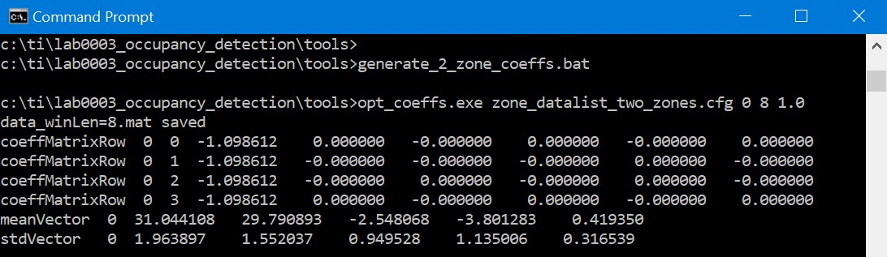
* Copy the lines beginning with **coeffMatrixRow**, **meanVector** and **stdVector** into your
chirp configuration file, replacing the lines that are there.
* Save the file and restart the demo in Operational mode.
* If you got left and right switched during data collection, you will
notice that zone decisions will be reversed when a single occupant is in one of the zones. To correct this, simply switch two
lines in your configuration file: coeffMatrixRow 1 and coeffMatrixRow 2. Simply reverse these matrix row numbers so that _Row 1 becomes
_Row 2 and vice versa. Save the file and restart the demo.
[[b! Lambda Selection tips
Lambda is a regularization parameter that is used in the coefficients optimization routine.
Typical values are 10, 3.0, 1.0 (default), 0.3, 0.1, 0.0 (non-regularized case).
Lambda allows balancing between overfitting and underfitting.
* Overfitting: A small lambda leads to a parameter set that fits well to the training data but typically does not work as well in actual usage with different scenarios and conditions.
* Underfitting: A large lambda value leads to more miss false positive or negative on training data, but tends to be robust to different situations.
* Experiment!
]]
+]]
Need More Help?
===========
* Find more details about VOD by referring to the [VOD Design document](http://www.ti.com/lit/ug/tidue95/tidue95.pdf)
* Find answers to common questions on [mmWave E2E FAQ](https://e2e.ti.com/support/sensor/mmwave_sensors/w/wiki)
* Search for your issue or post a new question on the [mmWave E2E forum](https://e2e.ti.com/support/sensor/mmwave_sensors/f/1023)